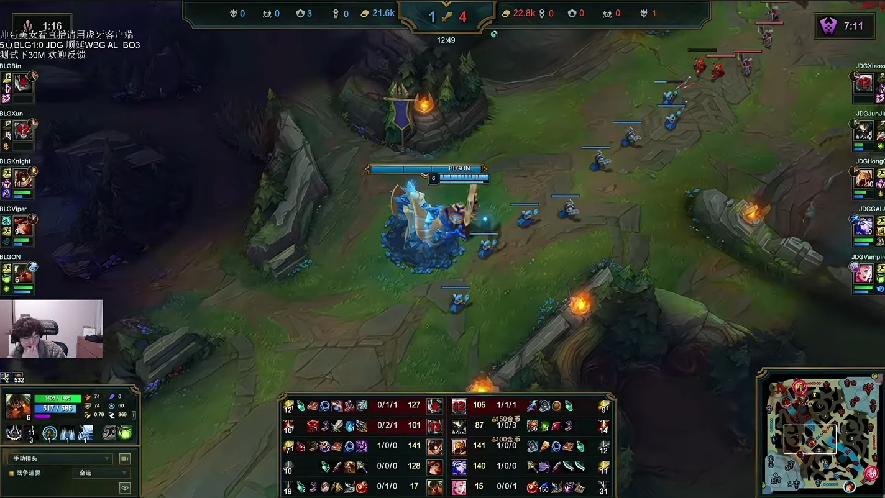
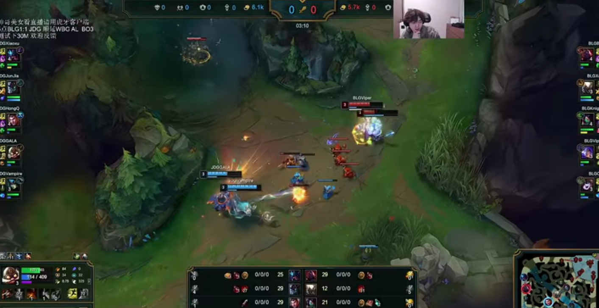
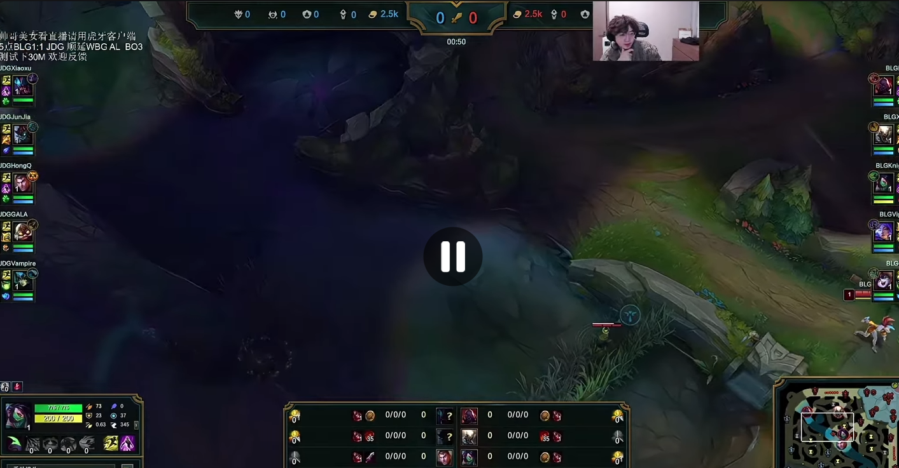

Although general consensus tells you that BLG is the top Chinese team to beat, JDG has now beaten them today at EWC Qualifiers and taken them to a third game in week 1. Let's analyze the possible draft and gameplay disparities Tabe and the team has been creating.
In both series, BLG stomped game 1 through winning lanes individually. Bin and Knight are objectively the best solo lanes in China, arguably worldwide. Viper and ON have seen hard times in the opening split, but now pick Ezreal and Elise game 1 to punish Vampire's Bard successfully. This is why it's become a herculean task to beat BLG domestically, drafting winning lanes isn't possible, and drafting for mid-late game leads to 5k+ gold leads by 20 minutes.
In the win for JDG game 2 of EWC Qualifier, Tabe invited the dive comp of Vi and Ziggs to counter with Skarner. The strength of Skarner is through disruption and counter-engage; in this screenshot, who on BLG is going to be able to kill Skarner? The gold is relatively even, but the only hope for BLG is to successfully kill Ashe or Seraphine before they use anything.

That game ended at 30 minutes with JunJia being the only one deathless. Tabe's idea was that no team can beat BLG through strong matchups or out-fighting them, there needs to be inherent advantages (like an unkillable Skarner). So where's the inherent advantage of game 3?

BLG ended up getting Yunara Lulu, Sion and Pantheon while JDG drafted for strong matchups by flexing Jayce mid lane and picking Rek'Sai. It goes completely against my previous point! The inherent advantage almost solely comes from Junjia's Maokai; a plan was set to disrupt Pantheon from minute 1.

This has been done in other pro games, but topside river brush was exploited for Junjia to invade level 1 without being revealed. Knight even knew this and stood by it until the first wave came. Junjia arrives 1 second later to the raptors camp, with ample time to fight XUN on his red buff. Due to Maokai's bonus jungle damage on Bramble Smash, he can easily outsmite Pantheon. Although XUN does end up making a blunder by using his empowered spear before the smite fight.
The only remedy for XUN is to gamble which side JunJia paths to, and invade the other side, he ends up not opting to invade. By 3:30, he was 4 camps behind and taken out of the game, snowballing it by desperately ganking Knight causing both of them to die. The plan worked out perfectly for JDG, it was practically a heist that was crafted meticulously for game 3.
I don't think this means JDG will defend its title as series winner, they used their bullet on this series and will need to find another one come playoffs.